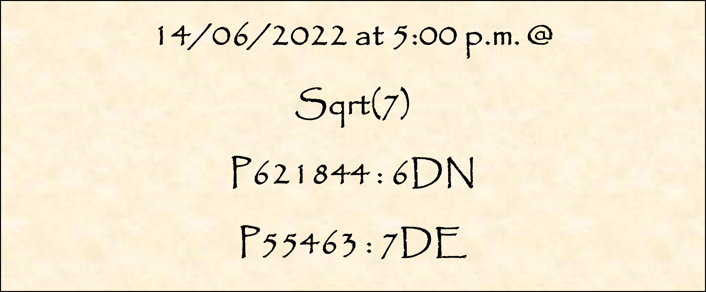

Vous vous approchez lentement de la pierre de lune. Voyant les autres potentiels apprentis soulever leur objet
dans les airs, vous essayez de faire de même. Malheureusement, vous ne croyez pas en l’existence de la magie et
pensez simplement qu’une astuce permet aux hommes masqués de sélectionner les croyants. Vous patientez
simplement en faisant mine de réfléchir au moyen de souffler votre énergie à l’intérieur de la pierre de lune.
Soudain, vous remarquez qu’elle se met à trembler, puis, lentement, à se soulever de terre. Vous ne percevez ni
fil, ni homme manipulant un aimant et vous restez ébahi devant le phénomène. Cependant, votre objet ne s’élève
pas plus haut que votre genou contrairement aux autres qui le font voler au-dessus de leur tête. Les mages
s’approchent de toutes les personnes ayant réussi l’épreuve et leur apportent une toge aux couleurs de leur
élément mais plus courte que les leurs. Un des mages vêtus de noir vous regarde d’un air désapprobateur mais
vous remet votre nouvelle tenue. Bravo ! Vous venez de rejoindre les Forsaken. Vous êtes ravi d'avoir réussi le
test d'admission mais reprenez très vite vos esprits car vous savez que le plus fastidieux reste à venir.
Depuis le début de votre formation en Irlande il y a déjà trois mois, vous avez acquis de nombreuses
facultés insoupçonnables. Vous maîtrisez partiellement la nécromancie et les techniques de base de la magie.
Vos journées sont rythmées par des cours de toute sorte. Jamais vous n’auriez imaginé tout cela possible.
 Entrez votre destination avec une majuscule à chaque mot et avec l'article
13 juin 2022